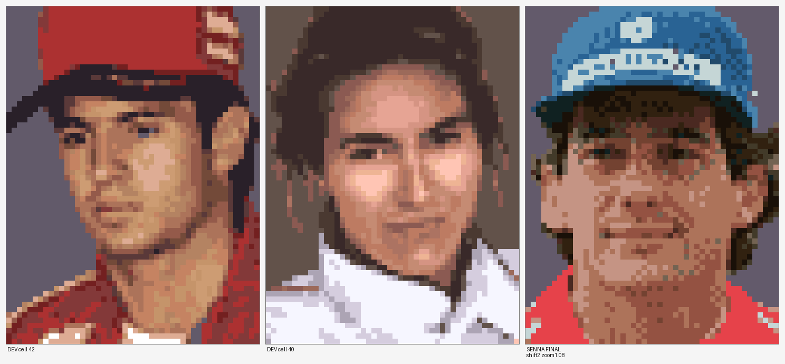

Technical Overview
How the hack is built. All addresses are ROM file offsets unless a CPU address is given, and all of them refer to the English-translated 2 MB ROM described on the overview page.
The ROM
2,097,152 bytes with no copier header. HiROM, with the map byte at $FFC0 reading $31 and the internal title HUMAN GRANDPRIX 4. The English translation is already applied to this dump, which matters a great deal: the driver table is plain ASCII rather than a custom Japanese encoding, so the text side of this hack is readable and editable directly.
HiROM address conversion for this ROM: ROM offset → CPU address is $C0 + (offset >> 16) : offset & 0xFFFF. For example offset $1E2360 is CPU $DE:2360. Banks $80-$BF:8000-FFFF mirror $C0-$FF:8000-FFFF.
The driver table
44 records from $4BCDD to $4C128, stride exactly 25 bytes. Each record:
| Offset | Size | Field |
|---|---|---|
| +0 | 13 | Name, ASCII, space-padded |
| +13 | 4 | Birth year, ASCII |
| +17 | 1 | Space |
| +18 | 5 | Birth date MM/DD, ASCII |
| +23 | 1 | Nationality index |
| +24 | 1 | Team index |
Nationality is a single index byte, never text. The mapping was derived from the data rather than assumed, and it holds for all 26 season drivers with zero exceptions - every driver of a given nationality carries the same byte: 00 USA, 01 AUT, 02 BEL, 03 BRA, 04 GBR, 05 FIN, 06 FRA, 07 GER, 08 ITA, 09 JPN, 0A NED.
The team index confirms which season the roster is. It increments in pairs, two drivers per team, and every pair is a real 1995 line-up: 00 Benetton, 01 Tyrrell, 02 Williams, 03 McLaren, 04 Footwork, 05 Simtek, 06 Jordan, 07 Pacific, 08 Forti, 09 Minardi, 0A Ligier, 0B Ferrari, 0C Sauber. The game's own 1995 copyright agrees independently.
The four editable slots are the last four records - 40, 41, 42 and 43, at $4C0C5, $4C0DE, $4C0F7 and $4C110. That was confirmed by walking the driver edit screen one step at a time: pressing right from slot 3 wraps back to slot 0, so there are exactly four. Senna takes record 41, which the ROM spells J.AMATI.
A warning for anyone searching this ROM themselves: ASCII BRA and ITA hits around $49A80-$4A090 are fragments of the words BRAKE and DIGITAL, not nationality strings.
The name was copied, not typed. A.SENNA already exists in this ROM as a 13-byte string, four times over, in the circuit lap-record tables - $4CB1D (Imola), $4CFF8 (Aida), $4D0DA (Adelaide) and $4D30F (Mexico City). Lifting those bytes guarantees the game's own encoding rather than trusting an assumption about it. Those entries are historical lap records, not roster entries, so using the name in a driver slot creates no duplicate driver.
The portrait
48 x 48 pixels is wrong; the cell is 48 x 64. Six tiles wide by eight tall, 48 tiles, 4bpp - 1,536 bytes decompressed. In VRAM the portrait sits at $C100, laid out six tiles wide with a row stride of $200, because VRAM rows are sixteen tiles wide.
Each driver has his own palette, and it lands in CGRAM palette 8. The stored palette for the editable slot is 32 bytes of little-endian BGR555 at $04BBF9. That address is one slot in a $20-strided palette array, with untouched neighbours at $04BB99, $04BBB9, $04BBD9, $04BC19 and $04BC39, and the original 32 bytes occur exactly once in the base ROM. Because the palette is per driver, replacing it affects no other face.
The portrait is compressed in ROM. That was established by measurement, not inference: all 48 tiles were built as exact 4bpp bytes and searched for across the whole ROM in six different plausible layouts - standard two-plane-pairs per tile, low planes then high, four planes in tile order, four planes in scanline order, scanline low-then-high, and column-major. None were found, and not one 64-byte slice of the standard layout occurs anywhere in the file. A pure re-interleaving of the same bytes would have left long runs intact, so the data is genuinely packed. All 48 tiles were found in VRAM at the same time, which is what makes the conclusion safe rather than a failed search.
The format is a byte-oriented scheme with literal, run and back-reference commands, identified from a correlated trace that logged every write to the unpack buffer alongside the last ROM address read. The tell was sixteen identical $FF bytes written while the source address stayed put, followed later by an alternating FF 00 FF 00 pattern from a parked source - a run command and a repeating back-reference respectively.
Portraits are reached through a pointer table at $1FE900-$1FEC00. The record at $1FEAB0 is the one that matters: in the base ROM it points at CPU $DE:2008, and exactly one live stream in the whole ROM carries the editable-driver portrait. There is no second copy. That single fact is what guarantees the result on every screen, including the victory podium - if a screen draws an editable driver's portrait at all, there is only one asset it can read.
How the new portrait is inserted
Senna's portrait is re-encoded into the game's own compression format and written into free ROM space, and the pointer at $1FEAB0 is aimed at it. The game then decompresses it exactly as it decompresses any other portrait. Nothing about the decoder, the buffer or the transfer to VRAM is touched.
The free space is at $03F800, CPU $C3:F800 - 2,048 bytes of $00 running to the end of bank $03, which is ordinary end-of-bank padding. Senna's encoded stream is 1,994 bytes, so it fits with room to spare. The re-encoded stream is smaller than the original 2,048-byte one and its token count is comparable, so decode time is not meaningfully different.
Why this approach and not a code hook. An earlier route did work by patching the shared VRAM DMA helper at $00D742 and copying tiles into the unpack buffer just before the transfer, but it required an executable-code patch, a fingerprint test to identify which slot was being drawn, and knowledge of the buffer's genuinely awkward interleaved layout - the portrait is not stored row-major in that buffer. Re-encoding the stream instead means no executable byte in the ROM changes at all. Every one of the 2,086 changed bytes is data, which is why the game's timing, physics and handling are bit-for-bit the original.
Amati's original stream is still physically present at $1E2008 and still decodes to her tiles. It is left in place deliberately: the ROM is a fixed 2 MB, so blanking it would save nothing, and changing bytes would invalidate the build that was actually tested. The guarantee is not that her portrait is absent but that it is unreachable - the 24-bit pointer $DE2008 occurs exactly once in the base ROM, at the record the patch rewrites, and zero times afterwards.
Matching the original artists
The bar for the portrait was that a player should take it for the developers' own work, which is a stricter test than simply looking like Senna. Meeting it needed measurement rather than judgement by eye, so the game's own portraits were measured first and the new art was tuned to those numbers.
The reference is the Christian Fittipaldi portrait, chosen because it is the closest analogue - a red cap above a red suit. Measured on it: mean pixel-to-pixel difference 19.25, isolated pixels 13.89%, mean colour run 2.09, mean saturation 0.494, maximum saturation 0.722, mean value 0.583.
Three of those numbers overturned an assumption worth recording, because each one points the opposite way to intuition:
- The original art is not flat. Short colour runs and a high isolated-pixel rate mean it is finely dithered in small colour steps. Mapping each pixel to its nearest palette colour without dithering produced runs that were too long and a surface that was too smooth.
- Removing stray pixels is the wrong instinct. A single de-speckling pass dropped the isolated-pixel rate to 2.73%, five times below the original art.
- Maximum saturation is the tell, not the average. The original art never exceeds 0.722. Capping the input does not achieve that, because palette centroids computed in a luma-chroma space get clipped on the way back to RGB and re-saturate. The cap has to be applied to the finished palette.
The resulting pipeline crops to the subject, scales so the head fills the full 64-pixel height, extends the subject outward before sharpening so that sharpening cannot halo against the background, sharpens, applies the saturation and value limits, reduces to 48 x 64, quantises to fifteen colours in a chroma-weighted luma-chroma space so that skin tones cannot map onto suit red, caps every palette entry, snaps all entries to 5-bit precision, dithers with error diffusion at 0.75 strength, and takes the background as the sixteenth entry. Vertical placement was set by measuring the centre of mass of the original portraits, which averages 32.64 - the first attempt sat at 33.88, visibly low.

Verification
Every claim above was checked against the running game or the bytes themselves rather than assumed:
- The tile data round-trips. The 1,536-byte 4bpp block was decoded back to an image and compared to the approved artwork - 0 of 3,072 pixels differ.
- The patch round-trips. Applying the IPS to a fresh copy of the base ROM reproduces the released
.sfcexactly, MD5BE9802BA.... - The changed bytes were counted, not estimated - a full byte-diff against the base ROM, with every changed region checked to fall inside the intended addresses.
- The stream diff is confined to the portrait. Decompressing every stream reachable from the pointer table, using each ROM's own pointer table, shows the difference limited to block offsets
$0500-$05FFand$0700-$0BFF- exactly the 48 portrait tiles - with a known-positive control asserted first so that a clean result could be trusted. - The result was read off the screen, not inferred from the patch: the driver edit screen shows
A. SENNAwith his portrait,BRA,1960and03/21, and slots 0, 2 and 3 render exactly as they do in the unmodified game. - Hardware and stress tested. A full Dream World GP field of Sennas puts every car on track drawing the patched driver data at once, which is the heaviest possible load on the changed bytes; it renders clean, including the rear-view mirror where cars behind are drawn.